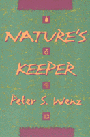

A thought-provoking look at the value of not making separations between humans and nature
A thought-provoking look at the value of not making separations between humans and nature


 A thought-provoking look at the value of not making separations between humans and nature
A thought-provoking look at the value of not making separations between humans and nature

|  |
Nature's KeeperPeter S. Wenzpaper EAN: 978-1-56639-428-4 (ISBN: 1-56639-428-7) |
In the West, humans tend to separate themselves from nature, valuing nature only as a means of meeting their own needs and happiness. This domination of nature often fosters human oppression instead of freedom and progress, as those who ignore abuses of nature tend to disregard human injustice as well. Peter S. Wenz argues that this oppression involves such destructive forces as sexism, ethnic strife, and political repression, including repression of the nuclear power industry's victims. Catastrophes like the Holocaust and the Gulf War are the result.
In contrast to the destructive "separate from nature" attitude, Wenz looks to various indigenous peoples as an example of societies where human beings revere nature for itself--societies where human beings flourish as individuals, in families, and in communities. Unlike societies dependent on commerce and industry, many indigenous peoples consider themselves part of a circle of life, reaping benefits far greater than the technological advances of the West. Wenz considers how to adopt the perspective of some indigenous cultures and how to make it work in our fast-food world. Additionally, he uses a trip to the World Uranium Hearings in Salzburg as a vehicle for understanding complex philosophical issues from consumerism to anthropocentrism.
Excerpt available at www.temple.edu/tempress
"Nature's Keeper is an eloquent critique of what might be termed the central myth of modernity: that scientific and technological progress and the increased control of nature make for a better life for human beings. For Wenz, 'progress' is a 'tragedy.' Via the dominant religious paradigm, the rise of what he calls 'commercialism' and industry, the modern state, and rule-bound bureaucracies, a five-part pattern is repeated over and over again. The end result of this pattern is an increase in human misery, insecurity, exploitation and injustice."
—Social Theory and Practice
Acknowledgments
Introduction
Flying on Faith •
A Call to Hear •
People against Nature •
An Indigenous Perspective •
The Paradoxical Thesis •
The Intellectual Journey
1. Our Christian Heritage
Plague and Passion Play •
Anthropocentrism and Original Sin •
Insecurity Breeds Concentration of Power •
Medieval Repression of People •
Secularizing Jeopardy and Power •
The Separation of Mind from Body
2. Commercialism
The Five-Part Pattern in Commercialism •
Comparative Advantage and the Promised Future
3. Industrialism
Standardization and Centralization •
Industrialism and Commercialism •
The Industrial Revolution, Colonialism, and Slavery •
Faith in Progress •
Class Stratification •
Skepticism about Darwin’s Theory •
The Industrial Evolutionary Theory •
Social Darwinism’s Justification of Inequality •
Sociobiology and the Subordination of Women •
Suppressing Individuality
4. Nationalism, Bureaucracy, and the Holocaust
The Importance of Government •
The Importance of Nationalism •
Dachau and Anti-Semitism •
The Inadequacy of Hate •
The Nature of Bureaucracy •
The Importance of Bureaucracy •
Moral Progress •
Departure
5. Nuclear Power and Radiation Exposure
The Hearing Begins •
Dangers of Radiation •
Uranium Miners •
Uranium Mining as a Radiation Pump •
Impact on Indigenous Communities •
Creating Radioactivity •
International Conspiracy •
The Politics of Nuclear Waste •
Unjust Distribution of Risks
6. Nuclear Power and Human Oppression
Government Subsidies and Financial Failures •
Borrowing from Future Generations •
The Scarcity of Uranium •
Plutonium as a Military Threat •
The Global Warming Rationale •
The Gulf War •
Rejecting Responsibility
7. Indigenous Peace and Prosperity
Why Discuss Indigenous Cultures? •
Stateless, Egalitarian Indigenous People •
Statelessness and Violence •
Food Abundance and Population Control •
Poverty and Exchange •
Industrial Poverty
8. Indigenous World Views
Natural Sufficiency and Cyclical Time •
Meaning, Security, and Individualism •
Rootedness and the Expansion of Society •
The Noncommercial and Sacred •
Indigenous World Views Are Nature-Friendly
9. Implications
Promoting Change •
Family Values •
Crime, Pornography, Drug Abuse, and the Work Ethic •
Creating Jeopardy Is Good Business •
Rejecting Utopian Thinking •
Invention Is the Mother of Necessity •
New Faith and Values
10. Practical Suggestions
An Alternative Politics •
Agriculture •
International Trade •
Transportation •
Energy, Equity, and Population Control •
Living with Nature
The Flight Home
Smoke in the Cabin •
Choosing What to Believe •
Denial
Sources
Index
Peter S. Wenz, Professor of Philosophy and Legal Studies at the University of Illinois at Springfield, is the author of Environmental Justice, Abortion Rights as Religious Freedom (Temple), and co-editor with Laura Westra of Faces of Environmental Racism.
Nature and the Environment
Philosophy and Ethics
Ethics and Action, edited by Tom Regan.
No longer active.
© 2015 Temple University. All Rights Reserved. This page: http://www.temple.edu/tempress/titles/1262_reg.html.